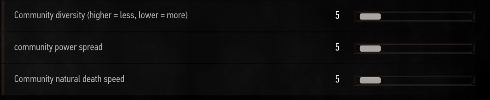

Everything you need to know about RER.Back to summary.
You can control which creatures you will see from RER with the ratio sliders
in the menus. But there is also the ecosystem feature that changes what
creatures will be spawned.
The ecosystem feature integrates a food chain and relationships into the game.
Whenever you kill a creature or you let it live, it changes
the surrounding ecosystem. The world is composed of hundreds of ecosystems,
they all are different and come with different sizes based on the communities
who live in them.
There are a few options to control the ecosystem feature.

The community diversity controls how diverse your ecosystems will
be. Higher values means you will see less diverse ecosystem, which will consist of
less species. The ecosystems will be composed of dominant species and RER
will often pick these one.
The power spread controls how much a species dominance spreads
over the world. But it also works for dominated species where you killed most
of its members. Higher values means the communities will spread over greater
distances.
The death speed or death rate controls how many members of the
communities die per generation. This slider is really important, it helps
regulate the ecosystems and avoid over dominating species.
If you want an ecosystem with more impact on the spawn chances, i'd suggest to set values as follows (in respective order): 15, 10 and 8.